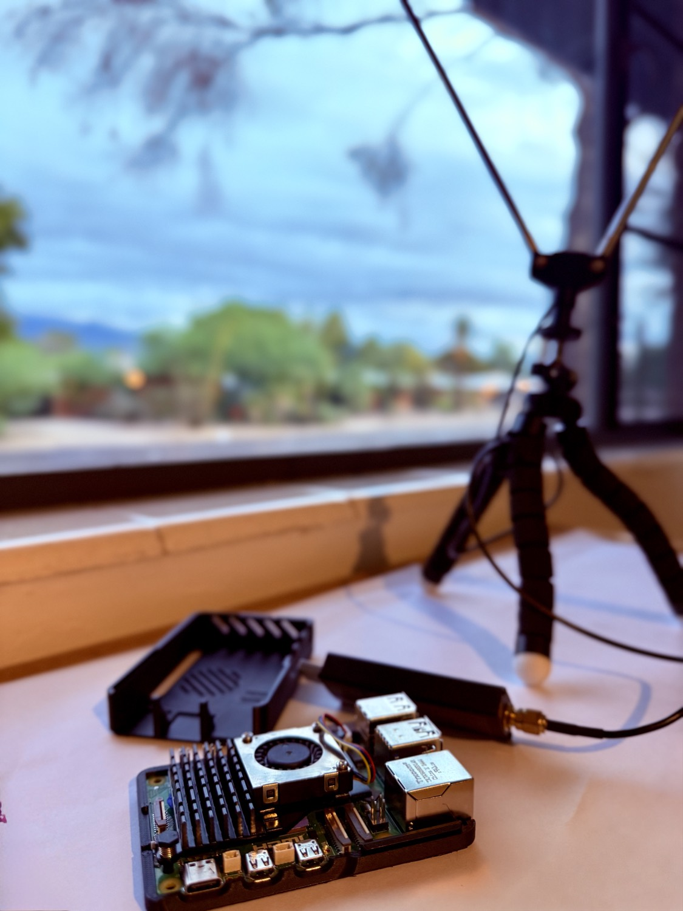
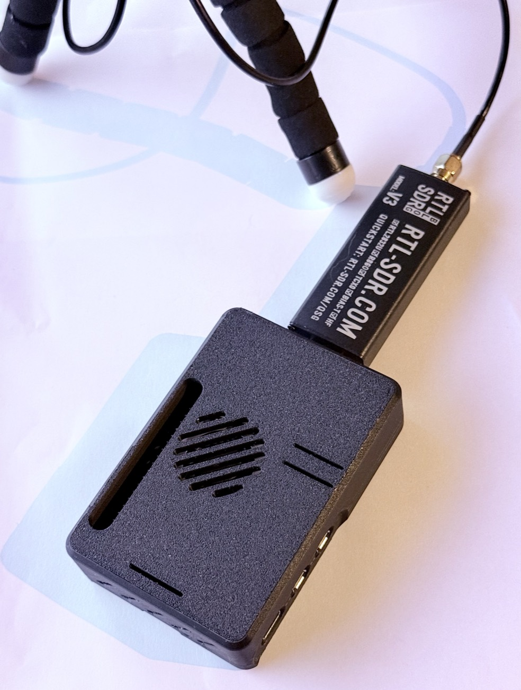

Listening to Tucson — one transmission at a time.
A Raspberry Pi and a $40 software-defined radio sit on a shelf and listen to emergency radio all day. Everything is transcribed locally. When the rain comes, it correlates what the dispatchers are saying with rainfall from backyard weather stations and discharge from stream gauges, and decides whether a flash flood is actually happening.

The demo
Threads, the raw feed, the map, and the day's activity — recorded live on 29 September 2026, during an active NWS Flash Flood Warning for Pima County. No narration; the screen is the argument.
Three regions are blurred: two medical calls and their street addresses in the hourly rollup, an EMS transport popup on the map, and one injury transmission in the feed. The blurs are deliberate, not encoding artifacts.
The problem
Tucson's washes are sand most of the year. During the monsoon they can go from dry to moving in minutes, fed by rain that fell somewhere you can't see. The official warnings are good, but they're regional, and the radio traffic often knows about a specific crossing before anything else does.
Monsoon Ears listens to that traffic and cross-checks it against physical sensors — so a dispatcher naming a wash and a gauge on the same wash rising become one signal instead of two.
How it works
A single RTL-SDR can only tune one frequency at a time, so most of the design is about spending that one scarce resource — and the compute behind it — carefully.
The scanner probes each priority frequency for about a second, holds when a signal appears, and resumes after a hangover window. Probe audio is prepended to the first held chunk so short transmissions don't slip between cycles.
A coarse RMS-domain gate drops noise-only chunks before anything expensive touches them. Free, and it removes most of the day.
WebRTC VAD finds actual speech boundaries inside whatever survived. Cheap, and it trims the silence Whisper would otherwise hallucinate over.
Whisper runs locally on the Pi's CPU. Its own per-segment confidence signals — no-speech probability, average log-probability, compression ratio — filter out the ghost text it emits on silence.
A separate worker polls the database and runs a small agent graph: classify, then extract structured incident data against a local gazetteer, then geocode. Decoupled, so an API outage backlogs the queue instead of breaking capture.
Every fifteen minutes, a larger model reads the recent voice traffic, the APRS weather packets, the stream and rain gauges, and the active NWS warnings, and decides whether they add up to a flood.
Illustrative. Real captures on this page are flood-related and have street numbers masked — see the note at the bottom.
All six stages are visible end to end in the dashboard walkthrough above — the feed filling, the extracted fields, and the map placing what could be geocoded.
The showcase
The digest doesn't just summarize. It weighs an official NWS warning above a rising gauge, a rising gauge above backyard rainfall, and reports which events and readings it used to reach the verdict. On a quiet day it says so — which is the harder behaviour to get right.
Real output, 29 September 2026, 11:23 MST — a Flash Flood Warning and a Flood Watch both active, Sabino Creek running, and the verdict citing the event ids it used.
Ask it things
Months of structured incident data end up in a SQLite file. Ask a question
in English; it becomes SQL and returns rows. Anything that isn't a single
read-only SELECT over the allowed tables is rejected before it
runs.
Illustrative — the shape of what comes back, not a captured result.
The case

The build runs in a printed snap-fit case designed around the official Pi 5 active cooler — an intake vent for the fan, exhaust at the back, and vents over the radiator. Two parts, no screws.
The design isn't ours. It's Raspberry Pi 5 Case (snap fit) by pyrho // 25.wf, free on Printables — download it there. The settings below are the designer's.
| Setting | Value |
|---|---|
| Material | PLA |
| Nozzle | 0.4 mm |
| Layer height | 0.2 mm |
| Orientation | flat side down |
| Supports | none |
| Parts | 2 |
Design by pyrho // 25.wf, licensed CC BY-SA. Multiple top variants with different port cutouts are included, so you can pick the one that matches your build.
Build one
The capture path, the gating, the transcription, and the agent graph don't care what they're pointed at. USGS gauges, NWS alerts, and APRS all work anywhere in the US and take a latitude and longitude. What you supply is local knowledge: your frequencies, your gauges, your street names.
| What | Where | Effort |
|---|---|---|
| Frequencies and talkgroups | config/frequencies.py | An evening on RadioReference |
| Location scalars | config/locale.py | Six values, one file |
| Stream and rain gauges | config/gauges.py | A USGS site query |
| Local place names | config/gazetteer.py | An hour with a map |
| A different hazard | agents/alert.py | One prompt, same structure |
Wildfire maps onto the same shape almost one-to-one: Red Flag Warnings in place of Flash Flood Warnings, fuel moisture and wind in place of stream discharge, canyons in place of washes.